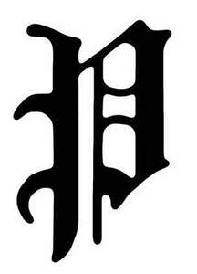

Trade Mark Journal No.2025/026 27 June 2025
UK00004218037 12 June 2025 (25,35)

- Class 25
- Clothing; Footwear; Headwear; Sports clothing [other than golf gloves]; Gymwear; Sportswear; Casualwear; Sweat absorbent clothing; Sweatshirts; Sweaters; Pullovers; Hooded pullovers; Fleeces; Gilets; Padded gilets; Hooded sweatshirts; Coats; Jackets [clothing]; Jackets being sports clothing; Sports jerseys; T-shirts; Tank tops; Athletic vests; Vests; Sports singlets; Tops [clothing]; Pants; Sweatpants; Shorts; Sweat shorts; Gym shorts; Trousers; Leggings; Tights; Athletic tights; Sweat bands for the wrist; Wristbands; Headbands [clothing]; Caps [headwear]; Hats; Cap peaks; Caps with visors; Visors being headwear for athletic use; Sports caps and hats; Socks; Sports socks; Gloves [clothing]; Scarves; Articles of outerclothing; Weather resistant outer clothing; Articles of underclothing; Underwear; Briefs [underwear]; Boxer shorts; Thongs [underwear]; Lingerie; Bras; Bralettes; Sports bras; Nightwear; Pyjamas; Dressing gowns; Robes; Skirts; Dresses; Skorts; Bodysuits; Knitwear [clothing]; Cardigans; Swimwear; Bikinis; Swimsuits; Swimming trunks; Swimming shorts; Beach clothes; Clothing for boxing; Boxing shorts; Boxing robes; Football shirts; Football shorts; Replica shirts; Replica shorts; Replica kits; Clothing for running; Jogging suits; Jogging clothing sets; Jogging bottoms; Tracksuits and tracksuit bottoms; Denims [clothing]; Denim jackets; Denim jeans; Denim pants; Denim coats; Jeans.
- Class 35
- Retail services in relation to clothing, footwear, headwear; Online retail sale services in relation to clothing, footwear, headwear; Presentation of goods on communication media, for retail purposes; Promotion of sports competitions and events; Promotion of goods and services through sponsorship; Promotion of goods and services through influencers; Promotion of goods and services through sponsorship of sports personalities; Promotion of goods and services through sponsorship of sports competitions and events; Organising and conducting of exhibitions and events for commercial, promotional or advertising purposes; Information, advisory and consultancy services relating to the aforesaid.
TOP 5% HOLDINGS LIMITED
Representative: JMW Solicitors LLP